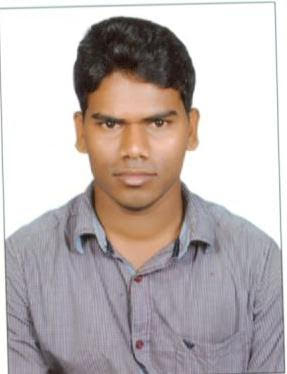

Ph.D. scholar;CORAL
jagadishjsu@gmail.com
Research Area:
Carbon Studies using Satellite Data
Mr. Buddolla Jagadish is currently working at the Centre for Oceans, Rivers, Atmosphere and Land Sciences (CORAL), Indian Institute of Technology Kharagpur as a PhD Research scholar. His research area is analyzing atmospheric and territorial carbon source and sinks using Remote sensing data with the help of Machine learning techniques. His M.tech (National Institute of Technology, Surathkal 2014-2016) was in Remote sensing and GIS and B.Tech (Jawaharlal Nehru Technological University, Anantapur, 2009-2013) was in Civil Engineering. In his B.tech dissertation he worked on “Site investigation and design of a minor distributary in a canal network of Telugu Ganga project” whereas in M.tech his thesis was on “comparison of two algorithms for estimation of Actual Evapotranspiration using MODIS data”
01.Species Level Mapping and AG Biomass Estimation from Airborne QuadPol SAR Data with other data sets using two Machine Learning Techniques from Related Forest Sites in India. (Sponsored: Space Applications Centre, Indian Space Research Organization (ISRO), Ahmedabad)